精巧高效型切割旗舰款
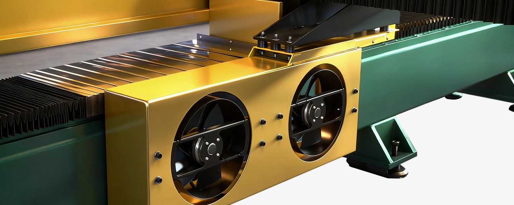
机身小巧
设备尺寸适配各类场地布局，小空间也能容纳专业切割设备。
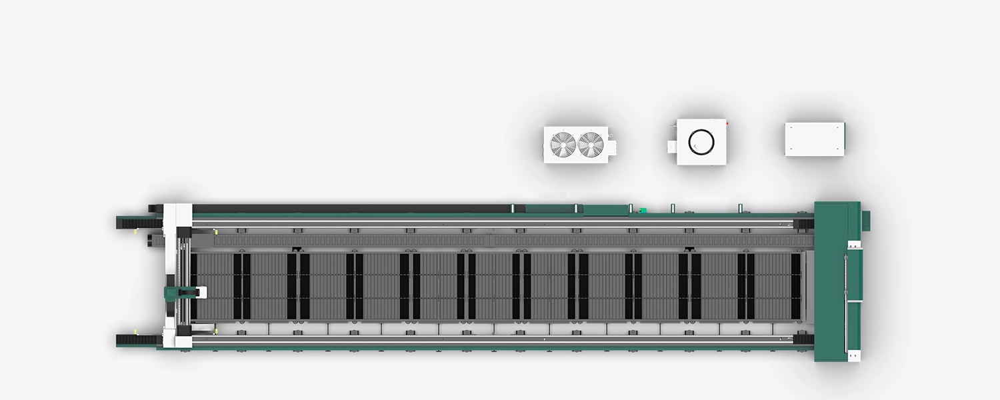
切割精度 8 微米
定位精度≤0.008mm（8 微米），媲美精密仪器的加工水准，复杂工件也能实现毫厘不差的精细切割。
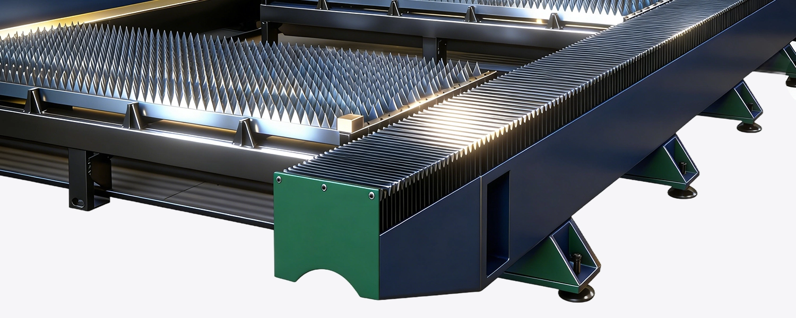
加速度 1.5G
超高速动态响应，加工节奏大幅提速，相同产能下耗时更短，生产效率直接跃升。
U 型直线电机
超稳驱动核心
搭载 U 型磁悬浮直线电机，采用 U 型磁路结构设计，推力输出均匀稳定，
运行噪音较传统电机大幅降低，动态响应速度快；无接触式传动结构减少机械磨损，
能适配高速、高精度的切割运动场景，大幅提升设备长期运行的稳定性。
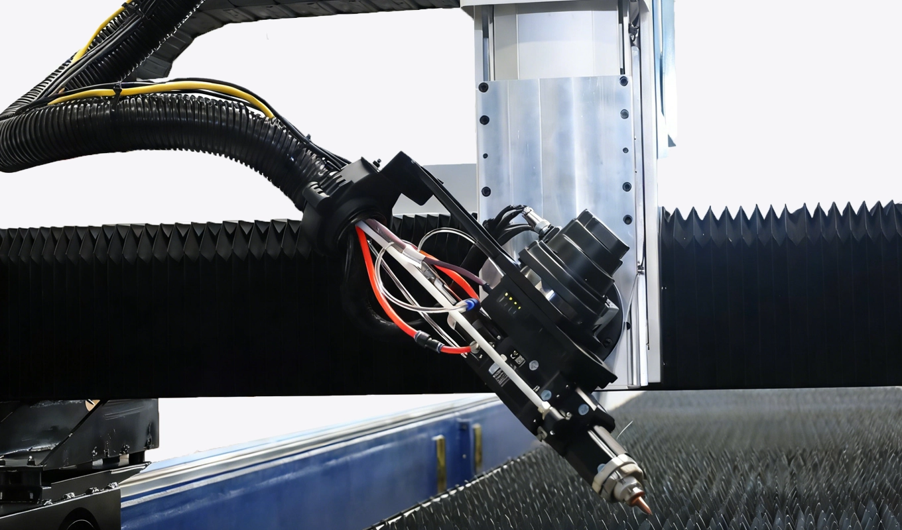
松下电机模组
松下电机模组
配置松下电机模组，依托品牌成熟的精密传动技术，传动精度误差可控在极小范围，
负载适配能力强，可稳定匹配设备高频率启停、调速需求；长期运行故障率低，
为设备动力系统提供持续、可靠的输出支撑。
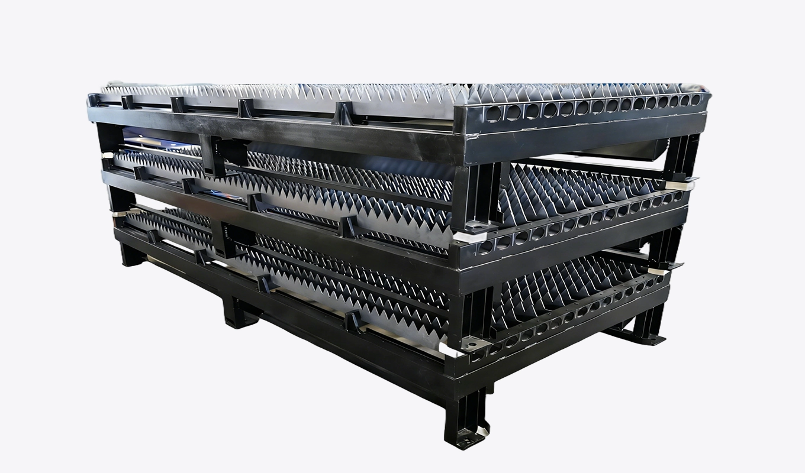
FAGOR 西班牙光栅读头
微米级精度标尺
采用 FAGOR（西班牙）进口光栅读头，分辨率可达 0.5μm，
定位精度高，重复定位误差极小；能为设备加工运动提供精准的位置反馈，
确保切割、传动动作的毫厘级精度把控，适配高精度激光切割等精密加工场景。
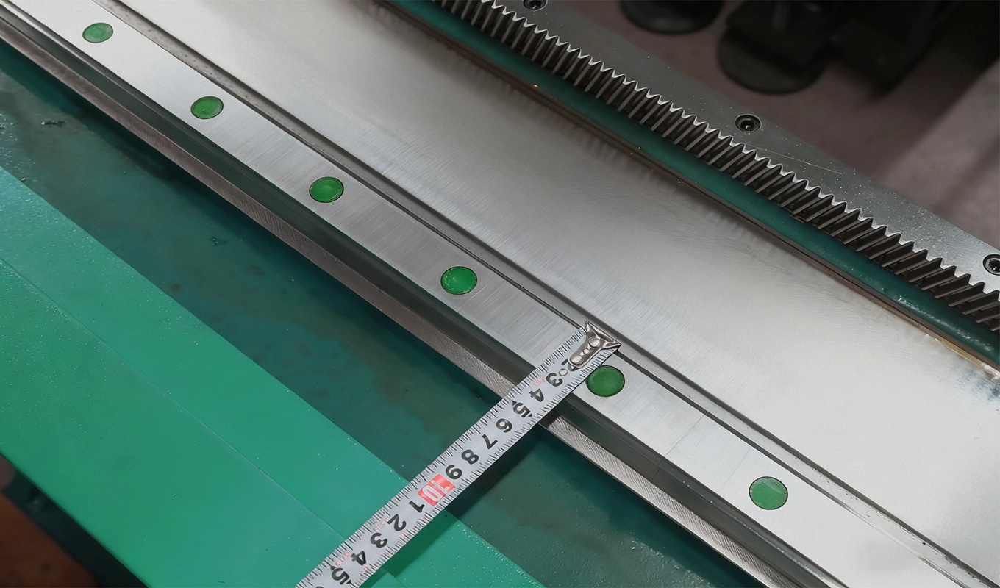
杜绝虚假宣传
| 型号 | M10 | M15 | M20 | M30 | M60 |
|---|---|---|---|---|---|
| 激光功率 | 1000W | 1500W | 2000W | 3000W | 6000W |
| 工作台面尺寸 |
600x600mm 800x800mm 1000x1000mm |
600x600mm 800x800mm 1000x1000mm |
600x600mm 800x800mm 1000x1000mm |
600x600mm 800x800mm 1000x1000mm |
600x600mm 800x800mm 1000x1000mm |
| 最大切割速度 | 45m/min | 45m/min | 45m/min | 45m/min | 45m/min |
| 定位精度 | ±8μm | ±8μm | ±8μm | ±8μm | ±8μm |
| 重复定位精度 | ±8μm | ±8μm | ±8μm | ±8μm | ±8μm |
| 批量加工最大切割厚度(碳钢) | 8mm (特殊情况20mm) | 12mm (特殊情况25mm) | 16mm (特殊情况20mm) | 18mm (特殊情况25mm) | 22mm (特殊情况25mm) |
| 批量加工最大切割厚度(不锈钢) | 4mm (特殊情况10mm) | 5mm (特殊情况12mm) | 6mm (特殊情况10mm) | 8mm (特殊情况12mm) | 14mm (特殊情况20mm) |
| 批量加工最大切割厚度(铝合金) | 1mm (特殊情况6mm) | 3mm (特殊情况8mm) | 4mm (特殊情况6mm) | 4mm (特殊情况8mm) | 10mm (特殊情况16mm) |
| 批量加工最大切割厚度(铜) | 1mm (特殊情况6mm) | 3mm (特殊情况8mm) | 4mm (特殊情况6mm) | 4mm (特殊情况8mm) | 10mm (特殊情况16mm) |
| 冷却方式 | 水冷 | 水冷 | 水冷 | 水冷 | 水冷 |
| 电力需求 | 380V/3PH 50/60HZ | 380V/3PH 50/60HZ | 380V/3PH 50/60HZ | 380V/3PH 50/60HZ | 380V/3PH 50/60HZ |
| 加速度 | 1.5G | 1.5G | 1.5G | 1.5G | 1.5G |
我们做精密仪器配件，Senrytech M 系列的 ±8 微米精度太能打了！超薄合金材料切割零误差，复杂孔径一次成型，不用二次校准，产品合格率直接拉满 99.9%，客户验厂都夸设备专业！
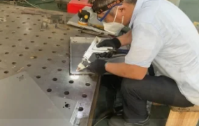
作为电子元器件厂商，对精度要求苛刻到微米级，M 系列完全达标！±8 微米的切割精度稳定输出，小尺寸零件批量生产一致性超强，搭配智能定位系统，换料调试时间省一半，产能提升 25%！
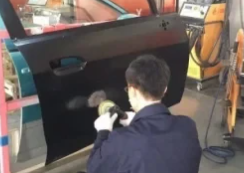
做医疗精密部件加工，M 系列的精度超出预期！±8 微米误差控制，让植入式配件的贴合度完美匹配，多种生物相容性材料都能精准切割，无毛刺、无变形，合规性和稳定性双在线，选对设备少操心！
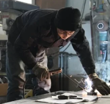
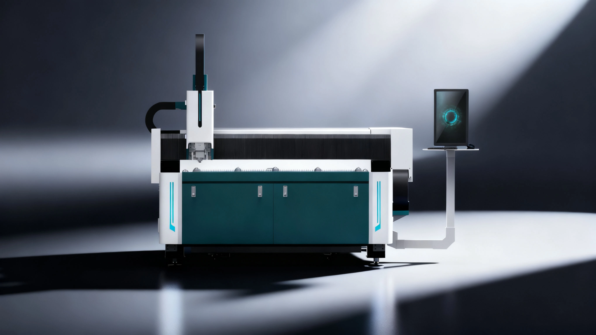
Senrytech A
3000W 以下首选，原厂核心件不缩水！为初创企业量身定制，0.8G
稳定加速 ±0.05mm 精度，把专业切割门槛打下来。
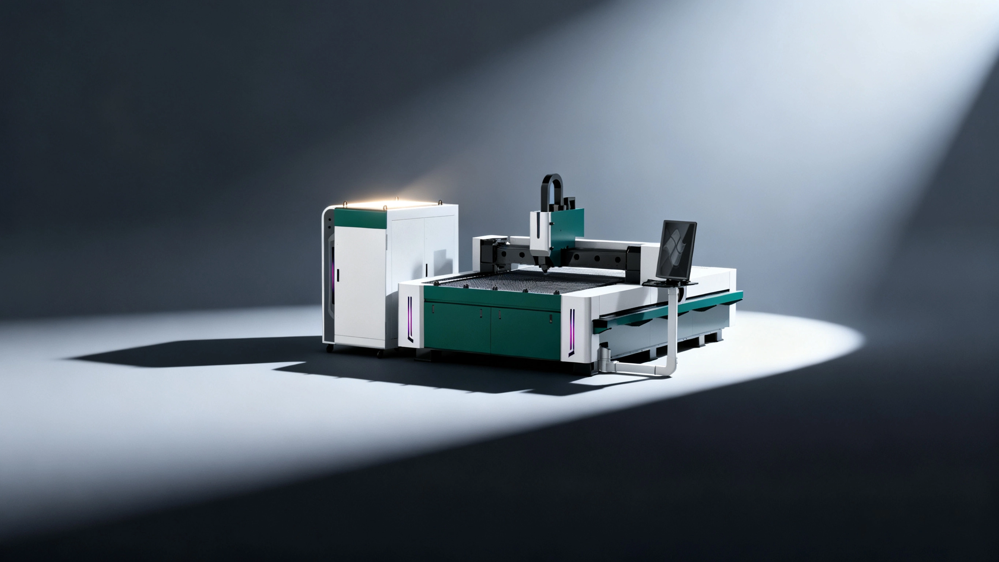
Senrytech B
12000W功率天花板！床身加固抗变形，电
机减速机动力翻倍，1.5G加速度，把中厚 板切割效率卷到新高度。
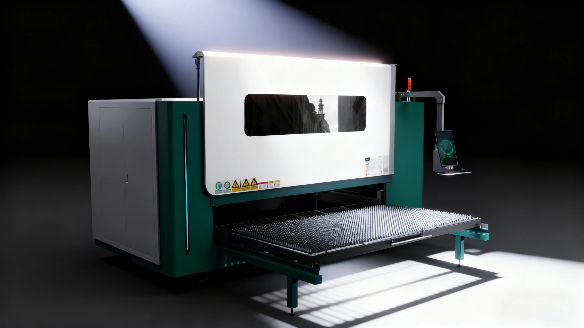
Senrytech B Plus
侧开包围省空间！上料台可手动拉出，适配小车间，安全与空间利用率双优化，不搞花架子。
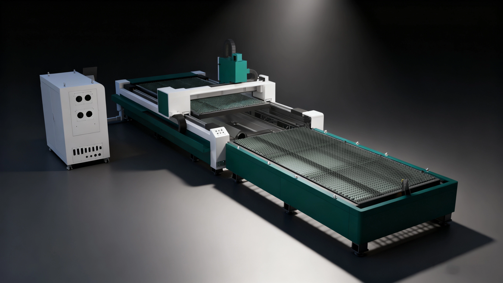
Senrytech B Pro
10 秒极速交换上料，双台自动无缝衔接，2.0G 高加速度实现设备‘不停机’生产，产能直接翻倍，精准解决工厂批量加工的待机痛点.
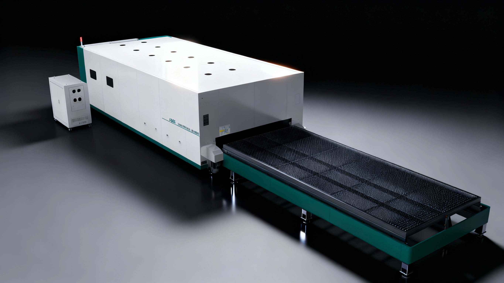
Senrytech B ProMax
全钣金包围 + 国际安全认证，专为出口企业定制！继承 B Pro 10 秒上料 + 2.0G 加速度核心优势，安全防护与生产效能双重达标，欧洲市场合规畅行，无额外溢价。
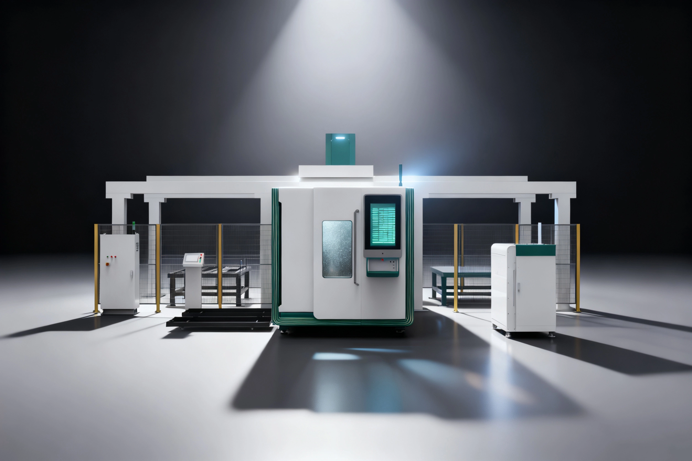
Senrytech B Ultra
真全自动上下料闭环！上料、切割、下料全自主，叠加全包围 + 高功率，把激光切割的智能天花板拉到新高度，黑灯工厂直接落地。
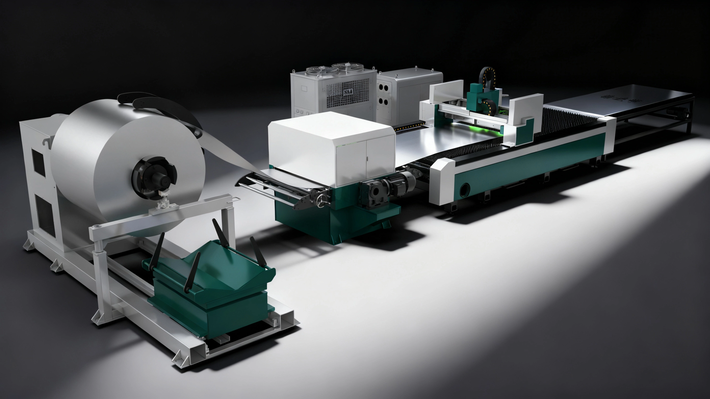
Senrytech C
15 吨承载极限 + 自动传料系统，0.5-2mm 铝卷直接成板切割，1.0G 加速度实现连续化生产，彻底告别人工上料繁琐，为铝制品企业提供高效闭环方案。
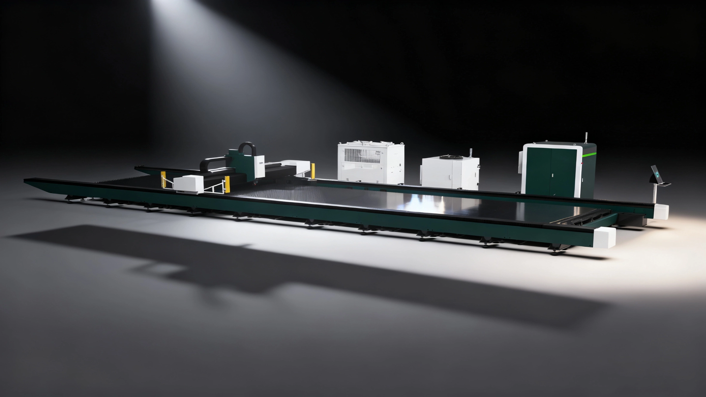
Senrytech G
12-14 米超长地轨，12000-60000W
超高功率，专为大型构件、重型厚板切割设计，±0.05mm
精度保障长件加工质量。
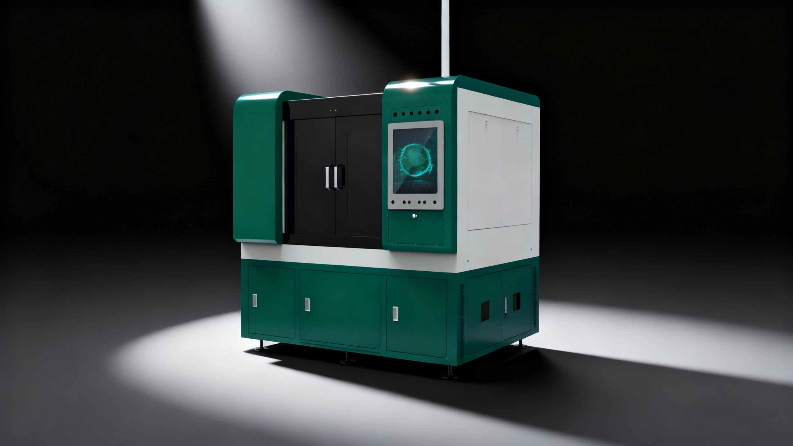
Senrytech M
±8 微米精度！迷你机身不占地，最高 6kW
功率，专为精密零件加工而生，小身材藏着真功夫，把精密切割做到极致。
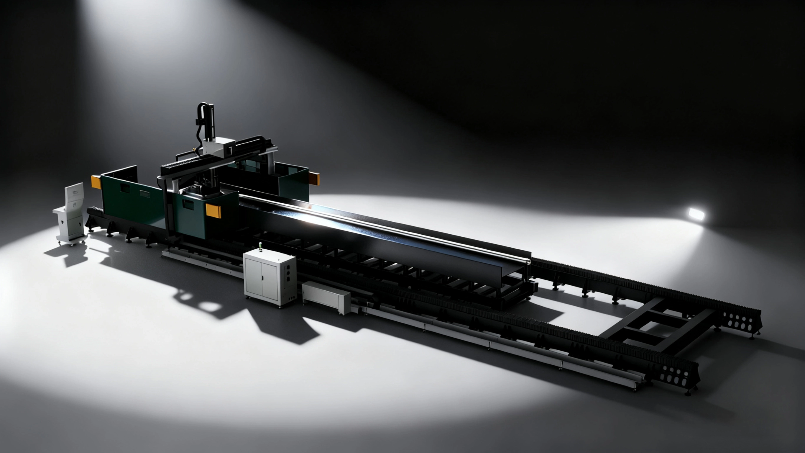
Senrytech S
专切 C/H 型钢、槽钢！14
米超长行程，定制化切割路径，不折腾、不返工，为钢结构行业打造高效专项解决方案。
填写下方表单，我们的专业顾问将在24小时内与您联系